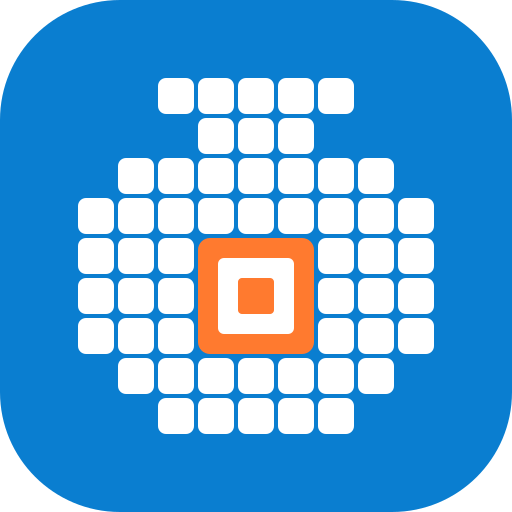
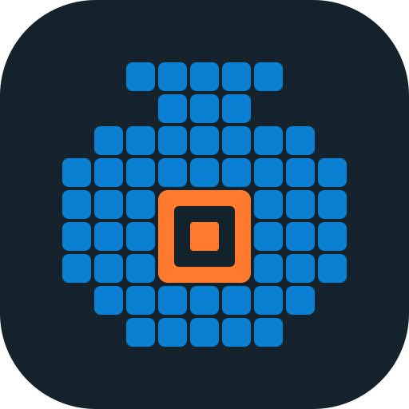
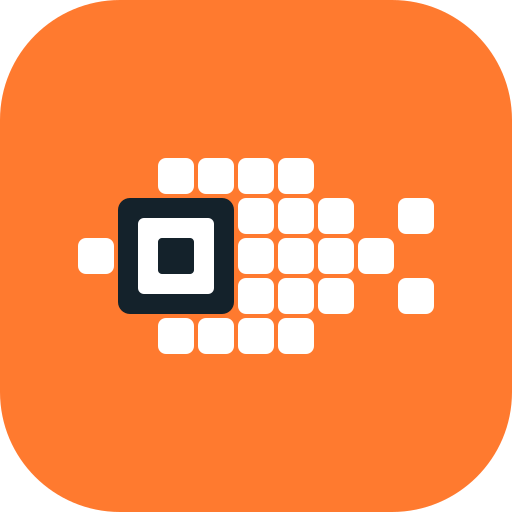

bowl
bowl
The watch-only app for Goldfish setups. Bowl holds the wallet: descriptor, addresses, history; it builds the transaction and broadcasts it. The fish signs. The bowl never holds the keys.
Mark
A fishbowl of QR modules on a 9 × 9 grid: lip, neck, round body. Same module as the Goldfish mark (9 units on a 10-unit grid, corner radius 2), same width (9 modules), and the Goldfish eye exactly (29 / 19 / 9 units, ink with a white ring). Goldfish is the orange one; Bowl is the blue one.
bowl-mark.svg
App icon
Built like goldfish-icon.svg: 128 tile, corner radius 30, mark at scale 1, so a module is the same size in both icons at every size. The dark tile inverts the eye, as goldfish-icon-dark.svg does.



Wordmark
Mark, then the name in lowercase Rethink Sans 700, like goldfish in the site header and on the device. The mark keeps the same module size as the fish next to the name, so the bowl stands almost twice as tall as the fish; don't shrink it to the fish's height.
bowlgoldfishbowlbowlColour
No new colours: blue is the Goldfish case blue. Orange stays Goldfish's; Bowl is blue with the shared ink eye.
Bowl blue (case blue)#0A7ED0
Ink · eye, text#14222B
White · eye ring#FFFFFF
Paper#EDF2F4
Grey text#5A6B75
Fish orange · Goldfish only#FF7A2F
Tagline
Goldfish says Sign and forget. Bowl should answer it, and must not suggest custody.
Rules
- Don't redraw the eye. It's the Goldfish eye: same geometry, ink with a white ring (inverted on ink tiles).
- Same module size as the fish whenever the two appear together.
- Bowl is blue, Goldfish is orange. No orange in the Bowl mark.
- Never draw keys, locks or a vault with the mark. Bowl is watch-only.